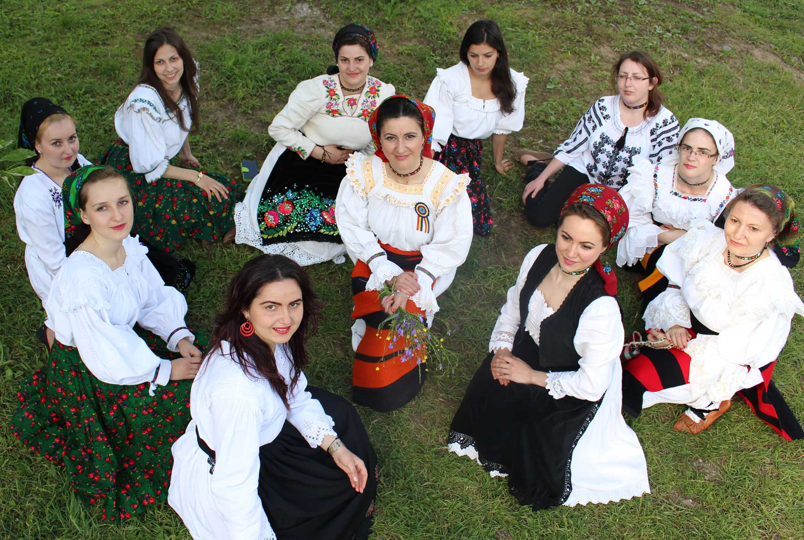
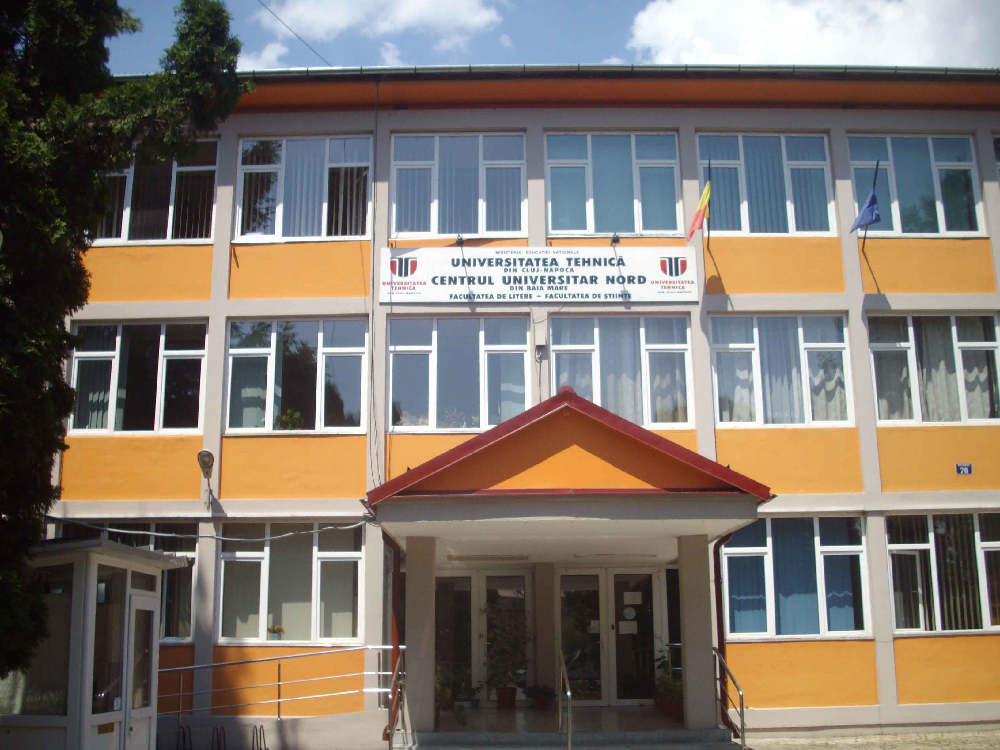
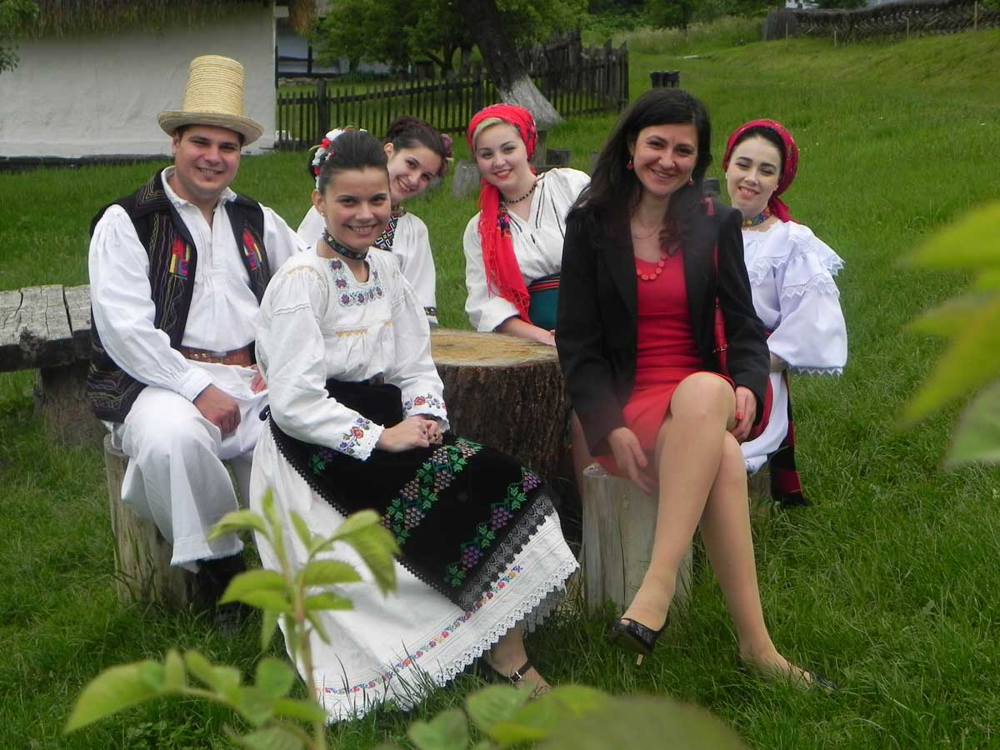
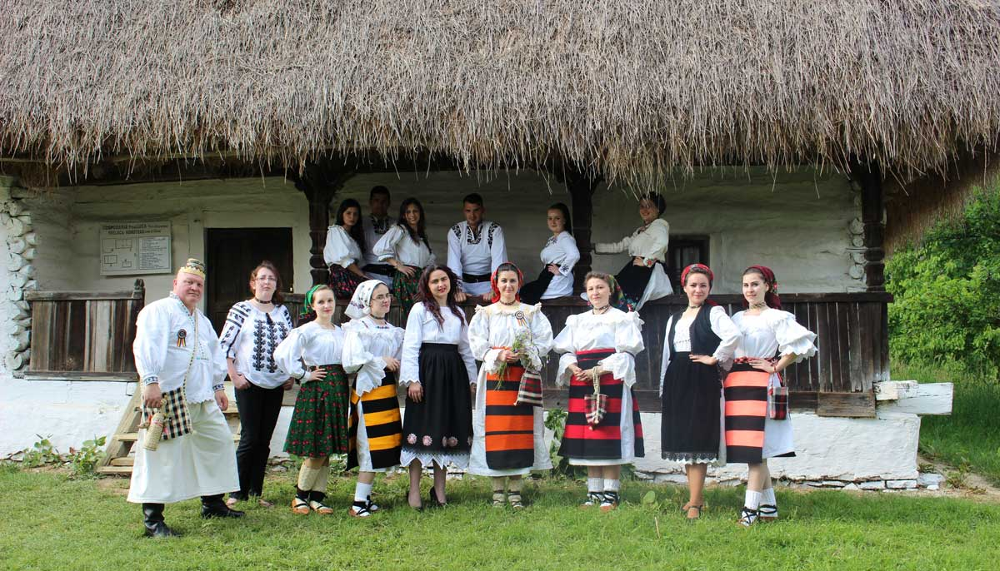
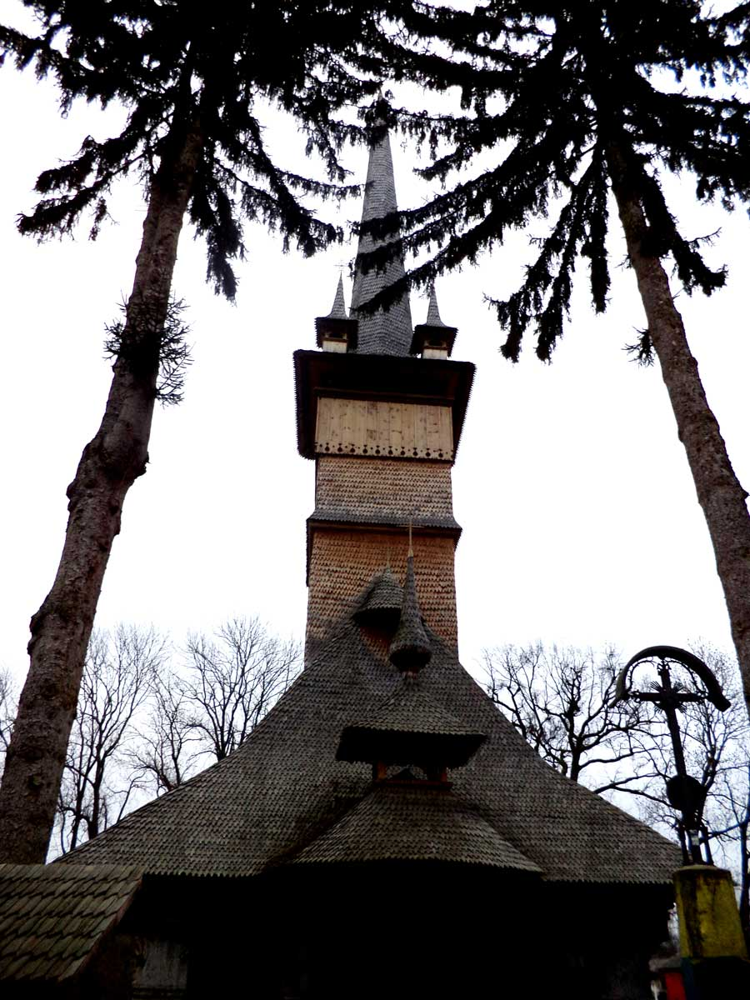
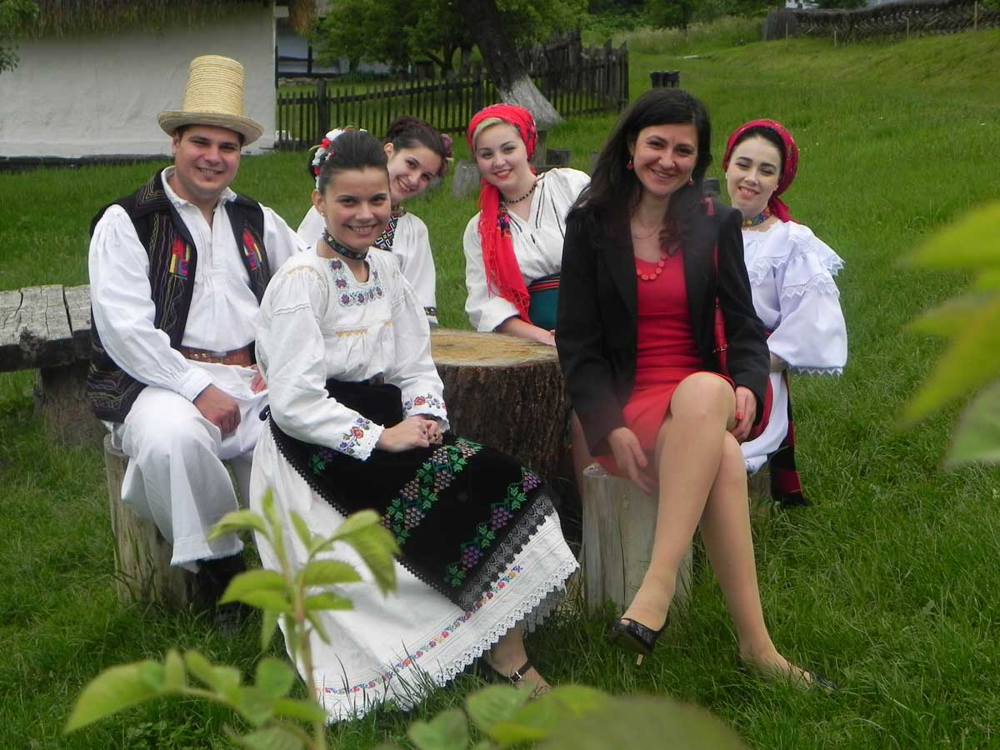
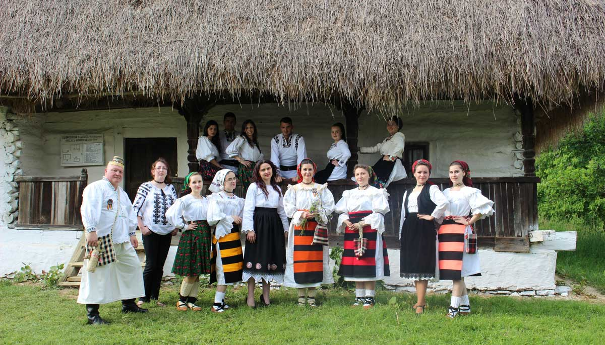
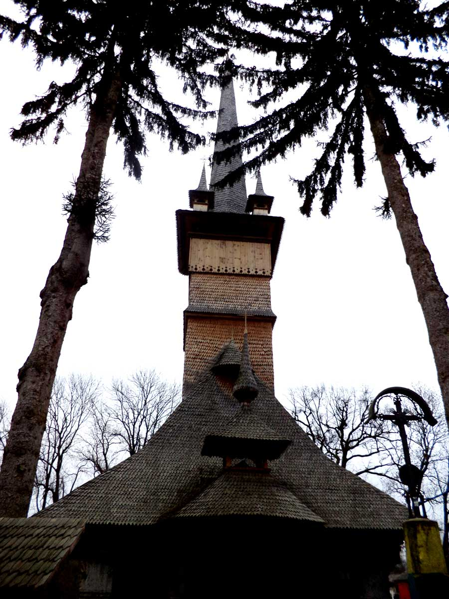

 





International conference of ethnology,
Traditions, national identity,
intercultural dialog, diversity (TINDID 3)
International conference of ethnology,
Traditions, national identity,
intercultural dialog, diversity (TINDID 3)
3'rd Edition
Baia Mare 31 september 2017
Time left until the event
Conference sections:
- DYNAMICS OF FOLKLORE EVENTS. TRADITION AND INNOVATION;
- UNITY AND DIVERSITY IN THE EUROPEAN CONTEXT. SYNCHRONY AND DIACHRONY IN THE DIALOGUE OF CULTURES;
- INTERDISCIPLINARY, MULTIDISCIPLINARY, TRANSDISCIPLINARY PERSPECTIVE IN
THE UNIVERSITY AND THE SECONDARY SCHOOL EDUCATION
(Folklore and Literature, Anthropology of Communication and Cultural
Anthropology,Ethnology and Linguistics, Traditional and Modern Art,
Rural Ethnology and Urban
Ethnology, The Cultural Identity, The Spiritual Culture, Sacred and Profane
ecc.)
- TRADITIONS, NATIONAL IDENTITY, INTERCULTURAL DIALOGUE,DIVERSITY;
- THE RELATIONSHIP BETWEEN THE UNIVERSITY TEACHING STAFF,STUDENTS AND MA STUDENTS. SPECIAL SECTION FOR UNIVERSITY STUDENTS AND MA STUDENTS.
Official languages of the conference: roumanian, english, franceza, italiana, germana, spaniola.
Prezentarea lucrarilor: 25 de minute ( 20 + 5 minute de discutii).
Where?
The conference will be held in the main building of “Petre Dulfu” County Library in Baia Mare (Independentei Boulevard, 4B), including at the Faculty of Letters of the North University Center in Baia Mare (Victoriei Street, 76). All conference rooms are equipped with computers and projectors. If you have a PowerPoint presentation, please make sure to save it in a format compatible with PowerPoint 2007/2010. There is WiFi internet connection at the conference venue, but also at the North University Centre and at the hotels. “Petre Dulfu” County Library and the Faculty of Letters are located in the city centre, a few hundred meters from any point of accommodation and very close to the University Restaurant.